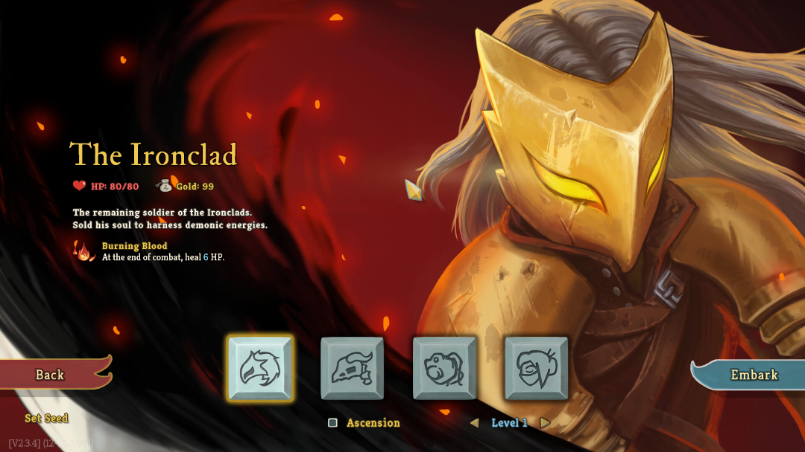

Slay The Spire
Ironclad
Silent
Defect
Watcher
Czym jest "Slay the Spire"?
Podstawowe mechaniki
Geneza i rozwój
Popularność i wpływ

Ironclad
- Pierwsza dostępna postać, jej mocnymi stronami jest akumulowanie siły lub bloku,
jednocześnie usuwając niepotrzebne karty w trakcie bitwy. Posiada dobrą wytrzymałość dzięki startowemu reliktowi.